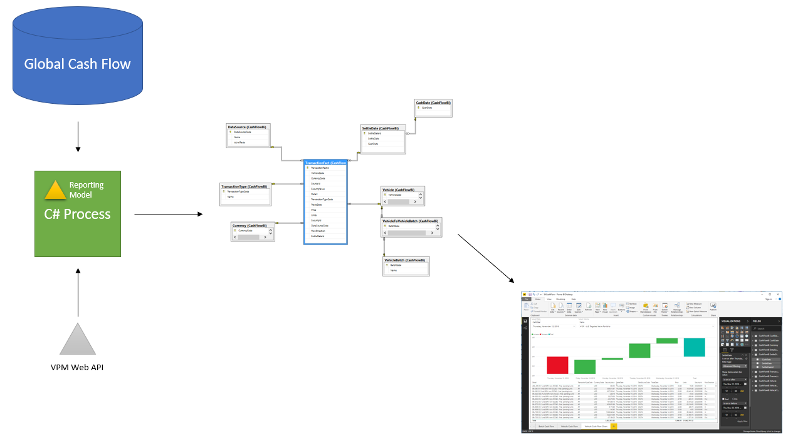

Power BI Demo
for Global Cash Flow
Supplements Current Systems
Not a Replacement
Power BI
Simple to learn
Bias Toward Dashboards
Close to Real Time
Not Good for...
Large Data Sets
Trend Reporting
Advanced Hosting Features
Cloud Offering
It Exists
How It Works

Data Scrubbing => Hard